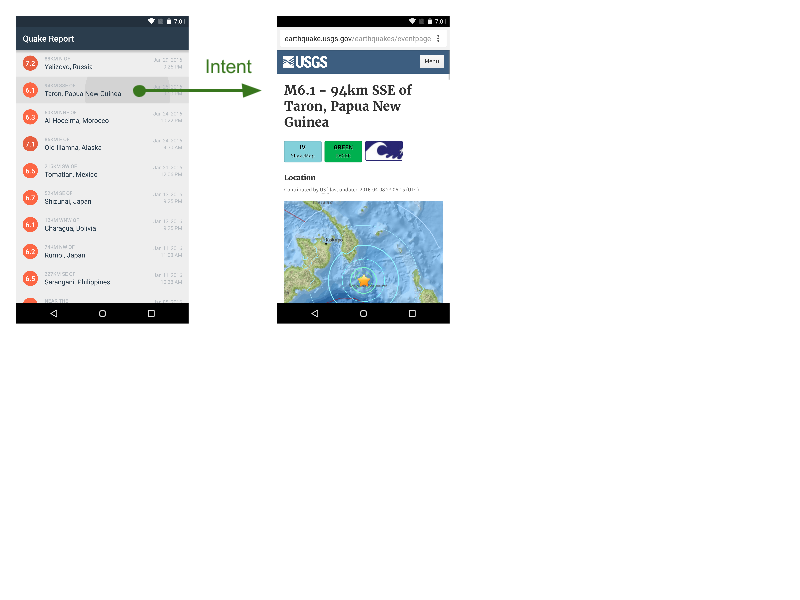

26. Add Earthquake Intent
Add Earthquake Intent
Question:
Ok, there’s actually ONE more thing left to do for the list UI to be finished. And good news, you already know these concepts!
Implementing this feature will involve remembering what we learned in the last course about click listeners on items in a ListView.
Your Turn
Set up Quake Report so that when users click on a particular list item, they are sent to the USGS web page to see additional details on that earthquake.

As you discovered in an earlier quiz, the JSON response from the server contains a website URL for that earthquake. We need to extract that field and store it in our app.
Once we detect the user has clicked on a list item, we need to open the right web page. Since we don’t care which web browser app on the device opens the web page, we can create and send an implicit intent that contains the website URL. Feel free to search online on how to accomplish the different parts of this task.
Start Quiz:
Solution:
Quiz Solution
Here are the answers to the questions:
- What was the key in the JSON response to get the website URL for the earthquake? “Url”
- What intent action did you set on the intent to open the web browser? Intent.ACTION_VIEW
Extract the website URL
The JSON response contains a website URL for each earthquake under the key “url”. We need to extract this value alongside the other earthquake data during parsing. Then we should pass in the url into the Earthquake object.
In QueryUtils extractEarthquake():
// Extract the value for the key called "url"
String url = properties.getString("url");
// Create a new {@link Earthquake} object with the magnitude, location, time,
// and url from the JSON response.
Earthquake earthquake = new Earthquake(magnitude, location, time, url);Store the website URL
The above change requires us to update the Earthquake class as well. We need to:
- modify the constructor to accept a String input parameter for the URL
- add a private global variable to store the URL
- provide a public getter method so that other classes can access that variable.
In Earthquake.java:
/** Website URL of the earthquake */
private String mUrl;
…
/**
* Constructs a new {@link Earthquake} object.
*
* @param magnitude is the magnitude (size) of the earthquake
* @param location is the location where the earthquake happened
* @param timeInMilliseconds is the time in milliseconds (from the Epoch) when the
* earthquake happened
* @param url is the website URL to find more details about the earthquake
*/
public Earthquake(double magnitude, String location, long timeInMilliseconds, String url) {
mMagnitude = magnitude;
mLocation = location;
mTimeInMilliseconds = timeInMilliseconds;
mUrl = url;
}
…
/**
* Returns the website URL to find more information about the earthquake.
*/
public String getUrl() {
return mUrl;
}Handle the list item click
Once the earthquake URL is properly stored in the Earthquake objects, we can access the URL when the list item is clicked. From the last course, we learned how to detect and respond when a user taps on a list item. We need to declare an OnItemClickListener on the ListView. OnItemClickListener is an interface, which contains a single method onItemClick(). We declare an anonymous class that implements this interface, and provides customized logic for what should happen in the onItemClick() method. Remember that the onItemClick() method is a callback triggered by the Android system when the user clicks on a list item.
In EarthquakeActivity onCreate():
...
// Create a new adapter that takes the list of earthquakes as input
final EarthquakeAdapter adapter = new EarthquakeAdapter(this, earthquakes);
// Set the adapter on the {@link ListView}
// so the list can be populated in the user interface
earthquakeListView.setAdapter(adapter);
earthquakeListView.setOnItemClickListener(new AdapterView.OnItemClickListener() {
@Override
public void onItemClick(AdapterView<?> adapterView, View view, int position, long l) {
// Find the current earthquake that was clicked on
Earthquake currentEarthquake = adapter.getItem(position);
// Convert the String URL into a URI object (to pass into the Intent constructor)
Uri earthquakeUri = Uri.parse(currentEarthquake.getUrl());
// Create a new intent to view the earthquake URI
Intent websiteIntent = new Intent(Intent.ACTION_VIEW, earthquakeUri);
// Send the intent to launch a new activity
startActivity(websiteIntent);
}
});We override the onItemClick() method, so that when a list item is clicked, we find the corresponding Earthquake object from the adapter. (Note that we also had to add the “final” modifier on the EarthquakeAdapter local variable, so that we could access the adapter variable within the OnItemClickListener.)
Earthquake currentEarthquake = adapter.getItem(position);Then we can get the URL from the current Earthquake object. But then how do we open the website? What if the user has multiple web browsers installed? Which app should open up the earthquake website? It would be better to use the defaults the user has already chosen, or give them the option. We can do this by creating an implicit intent.
Instead of deciding exactly what activity we want to launch with an intent, we can instead specify what action we want to perform, without giving any option on what activity should actually handle that action. In this case, we'll create an intent with the action of viewing something. What do we want to view? Well this Intent constructor also accepts a URI for the data resource we want to view, and Android will sort out the best app to handle this sort of content. For instance, if the URI represented a location, Android would open up a mapping app. In this case, the resource is an HTTP URL, so Android will usually open up a browser.
The Intent constructor (that we want to use) requires a Uri object, so we need to convert our URL (in the form of a String) into a URI. We know that our earthquake URL is a more specific form of a URI, so we can use the Uri.parse method (see this StackOverflow post).
Uri earthquakeUri = Uri.parse(currentEarthquake.getUrl());Once we have the website URL in a Uri object, we can create a new intent.
Intent websiteIntent = new Intent(Intent.ACTION_VIEW, earthquakeUri);Lastly, we start a new activity with that intent, so that a web browser app on the device will handle the intent and display the website for that earthquake.
startActivity(websiteIntent);